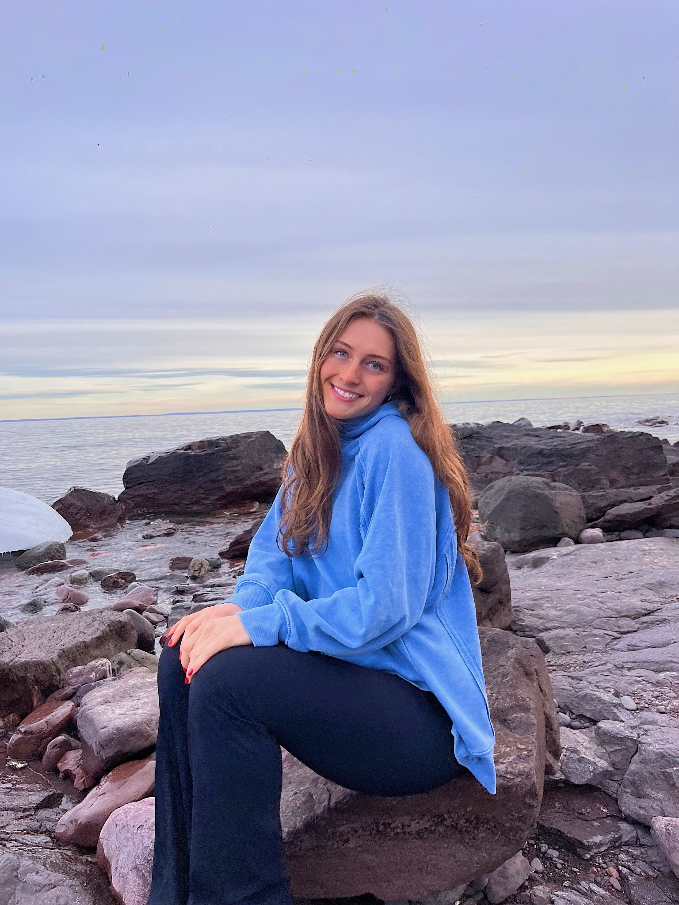
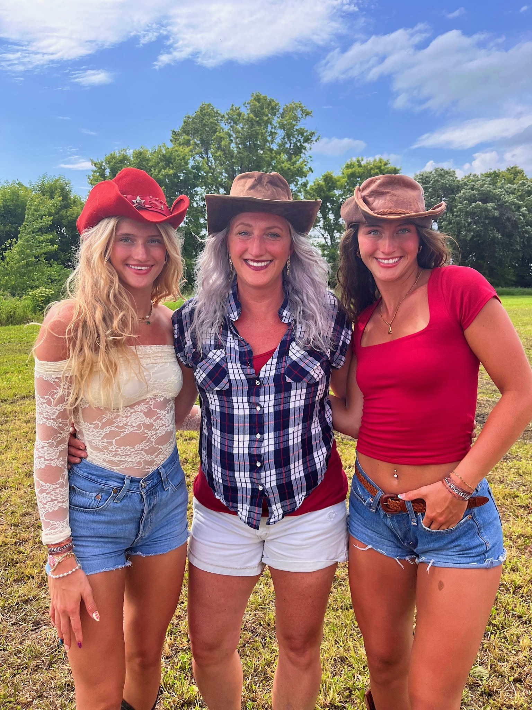

I’ve always loved being active. Since 4th grade, I was the kid who wanted to be in every sport—volleyball, club volleyball, basketball—you name it. I liked the energy, the competition, and most of all, the challenge. But when I started running track, something just clicked. It was the first sport where I really started to stand out, and I discovered how much I loved pushing myself to the limit—not just physically, but mentally too. As I got more serious, track opened doors for me. I started getting noticed by college coaches, and eventually, I got the opportunity to run at UMD. From the moment I stepped on campus and met my future teammates, I knew I was in the right place—we clicked right away. Training year-round in college isn’t easy—it’s intense and takes a lot of commitment—but I genuinely enjoy it. It challenges me every day, and I can feel myself growing through it. Track has become more than just a sport for me; it’s a big part of who I am, and it’s taught me how to work hard, stay focused, and keep showing up, no matter what.

Enjoying the Outdoors
I grew up in northern Wisconsin, about 15 minutes outside of town, surrounded by beautiful lakes and endless forests. Nature has always been a big part of my life, and I’ve loved everything it has to offer for as long as I can remember. Each season has its own kind of beauty, but nothing compares to summer. I love summer—being tan, spending days on the lake, swimming with friends, boating, jet skiing, picking wildflowers, setting off fireworks, and enjoying good food outside. There’s a kind of peace and happiness I only feel when I’m out in nature. It’s where I feel most like myself, and I truly love it with my whole heart.

Family
I’m the oldest of four siblings—two brothers and one sister. Our birth order goes girl, boy, girl, boy, and since we’re all just two years apart, we grew up going to grade school together and sharing a lot in common. Because of that, we’ve always gotten along well and they’re the people who make me laugh the hardest. I truly believe some of my best friendships are rooted in the bonds I have with my siblings. Beyond that, my parents have been incredible role models, supporting me through every high and low. Family has shaped who I am, and they’re the foundation I lean on no matter what.